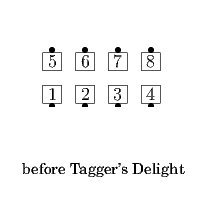
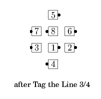
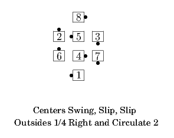
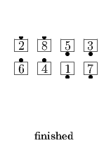

From a 3/4 Tag or other applicable formations: Outsides 1/4 Right (if Delight) or 1/4 Left (if Dilemma) and Circulate twice as the Centers (stepping to a wave if necessary) Swing, Slip, Slip, and Cast Off 3/4. Usually ends in Parallel Lines.
Starting position depends on the <tag> action. Do the <tag> action to the 3/4 Tag position, then Delight or Dilemma.
   
Note: Other calls in which all the dancers simply move forward to create a 3/4 Tag formation, even though they are not generally considered tagging calls, are sometimes combined with Delight/Dilemma in the same way, e.g. from a 1/4 Tag "Jay Walker’s Delight" or from Parallel Waves "Extender’s Dilemma".
© Copyright 2004-2017 Vic Ceder and CALLERLAB Inc., The International Association of Square Dance Callers. Permission to reprint, republish, and create derivative works without royalty is hereby granted, provided this notice appears. Publication on the Internet of derivative works without royalty is hereby granted provided this notice appears. Permission to quote parts or all of this document without royalty is hereby granted, provided this notice is included. Information contained herein shall not be changed nor revised in any derivation or publication.